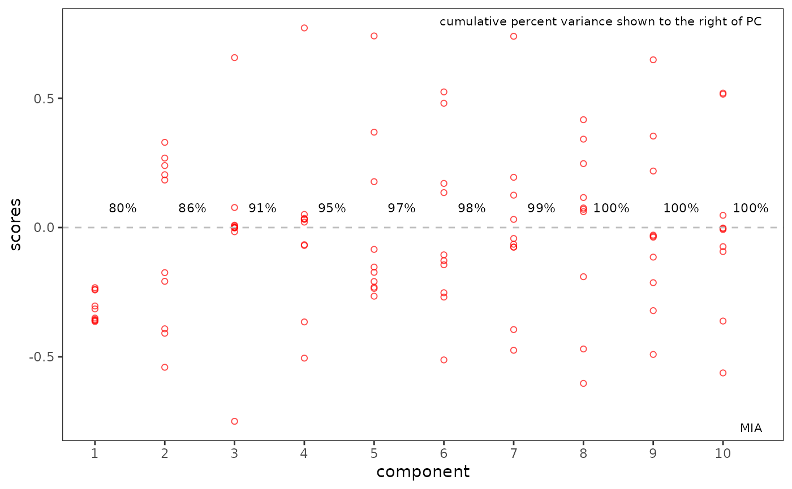

Multivariate Image Analysis (Tucker 1) of a Spectra2D Object
Source:R/miaSpectra2D.R
miaSpectra2D.RdCarry out multivariate image analysis of a Spectra2D object
(multivariate image analysis is the same as a Tucker1 analysis).
Function pcasup1 from package ThreeWay is used.
miaSpectra2D(spectra)Arguments
- spectra
An object of S3 class
Spectra2D.
Value
A list per pcasup1. Of particular interest are the
elements C containing the eigenvectors and 1c containing the eigenvalues.
We add the class mia to the list for our use later, as well as a method
element for annotating plots.
References
A. Smilde, R. Bro and P. Geladi "Multi-way Analysis: Applications in the Chemical Sciences" Wiley (2004). See especially Example 4.5.
P. Geladi and H. Grahn "Multivariate Image Analysis" Wiley (1996). Note that in this text the meanings of scores and loadings are reversed from the usual spectroscopic uses of the terms.
See also
For other data reduction methods for Spectra2D objects, see
pfacSpectra2D and popSpectra2D.
Examples
library("ggplot2")
data(MUD1)
res <- miaSpectra2D(MUD1)
#> PCASUP: eigenvalues mode C
#> Eigenvalue Fit(%)
#> Comp.1 92964.50 79.89
#> Comp.2 6995.23 85.90
#> Comp.3 5744.79 90.84
#> Comp.4 4342.95 94.57
#> Comp.5 2282.62 96.53
#> Comp.6 1959.07 98.22
#> Comp.7 1132.67 99.19
#> Comp.8 528.56 99.65
#> Comp.9 263.81 99.87
#> Comp.10 148.99 100.00
# plotScores & plotScree use ggplot2 graphics
p1 <- plotScores(MUD1, res, tol = 1.0, ellipse = "cls")
#> Error in plotScores.Spectra2D(MUD1, res, tol = 1, ellipse = "cls"): object 'res' not found
p1 <- p1 + ggtitle("MIA Scores")
#> Error: object 'p1' not found
p1
#> Error: object 'p1' not found
p2 <- plotScree(res)
#> Scale for x is already present.
#> Adding another scale for x, which will replace the existing scale.
p2

# plotLoadings2D uses base graphics
MUD1a <- plotLoadings2D(MUD1, res,
load_lvls = seq(-90, 0, 10),
main = "MIA Comp. 1 Loadings"
)
 # Selection of loading matrix levels can be aided by the following
# Use MUD1a$names to find the index of the loadings
inspectLvls(MUD1a,
which = 11, ylim = c(0, 80),
main = "Histogram of Loadings Matrix"
)
# Selection of loading matrix levels can be aided by the following
# Use MUD1a$names to find the index of the loadings
inspectLvls(MUD1a,
which = 11, ylim = c(0, 80),
main = "Histogram of Loadings Matrix"
)